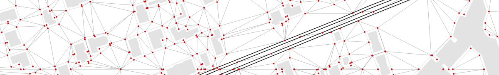
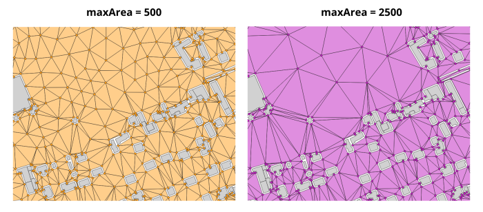
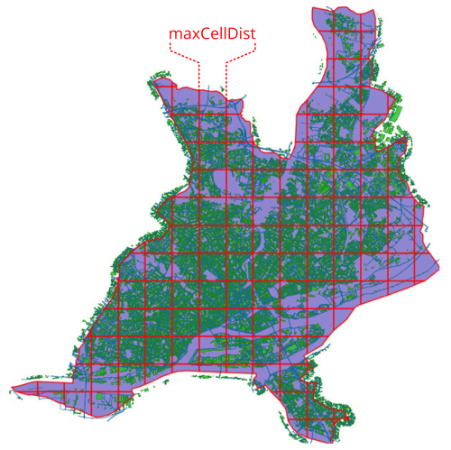

Receivers
NoiseModelling is a tool for producing noise maps. To do so, at different stages of the process, the application needs input data, respecting a strict formalism.
Below we describe the table RECEIVERS, dealing with the receivers.
The other tables are accessible via the left menu in the Input tables & parameters section.

Table definition
Warning
The two following columns are mandatory
PKDescription: receiver’s unique identifier.
Type: Integer - Primary Key
THE_GEOMDescription: 3D receiver’s geometry. Z coordinate correspond to the receiver’s height (relative to ground altitude)
Type: Geometry (
POINTorMULTIPOINT)
If you are working with receivers based on buildings (e.g 50 cm around the building’s facades - see Building_grid script), your RECEIVERS table will need this additional column:
BUILD_PKDescription: building’s Primary Key (
PK), allowing to link the receivers with their buildingType: Integer
Parameters
Below are listed the most important input parameters that may be found in the scripts dealing with receivers generation (e.g Building_grid, Delaunay_grid, …) (see Receivers section in the left-side menu of NoiseModelling).
These parameters can be mandatory or optional. When necessary, we indicates the default values and those we recommend (from an acoustic point of view).
Maximum area
Parameter name:
maxAreaDescription: Set Maximum Area. No triangles larger than the provided area will be created. Smaller area will create more receivers (square meters)
Type: Double
Default value:
2500Recommanded value:
2500

Maximum cell size
Parameter name:
maxCellDistDescription: Maximum distance used to split the domain into sub-domains. In a logic of optimization of processing times, it allows to limit the number of objects (buildings, roads, …) stored in memory during the Delaunay triangulation (meters)
Type: Double
Default value:
600Recommanded value:

Road width
Parameter name:
roadWidthDescription: Set Road Width. No receivers closer than road width distance will be created (meters)
Type: Double
Default value:
2Recommanded value:
Height
Parameter name:
heightDescription: Receiver height relative to the ground (meters)
Type: Double
Default value:
4Recommanded value: